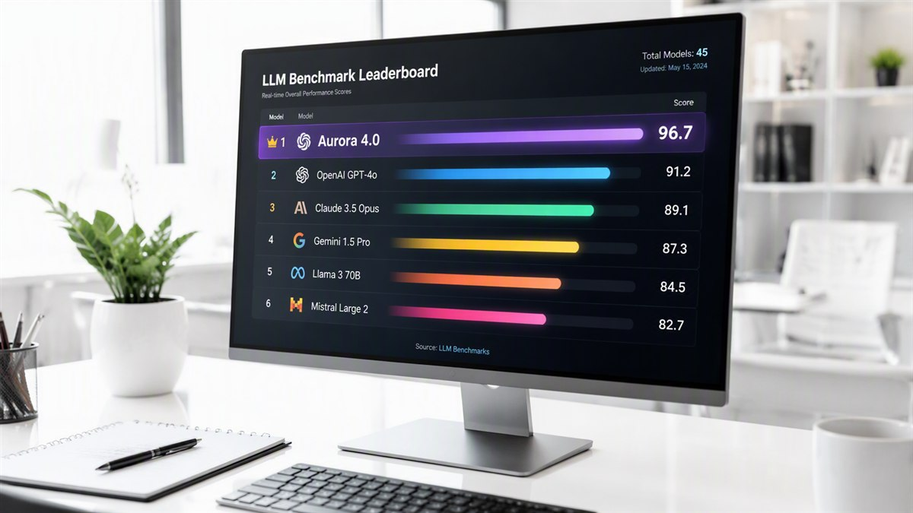

Related Review
 DeepSeek8.8
DeepSeek8.8Hands-on testing, score breakdown, pros & cons — everything you need to decide.
StackHKFull review
The open-source model family keeps closing the gap with closed frontier models — self-hosters are the big winners.

The open-source model family keeps closing the gap with closed frontier models — self-hosters are the big winners.
DeepSeek's open-weight models climbed to the top of reasoning benchmarks while costing a fraction of their closed rivals. For self-hosters and cost-conscious teams, the value proposition is now undeniable.
We'll keep following this story and update our coverage as more details emerge. For a deeper look at the tool itself, see our full hands-on review below.
DeepSeek’s latest reasoning model topped a suite of widely watched benchmarks covering math, code and multi-step logic — placing it alongside — and on several tests ahead of — models from the US frontier labs. The weights ship under an open license, with API pricing a fraction of incumbent rates.
The architecture leans on reinforcement-learning-heavy training for chain-of-thought quality rather than sheer parameter count, plus aggressive inference optimization. The result is a model that ‘thinks’ longer per answer but charges dramatically less per token of reasoning.
Reasoning is the capability that unlocks agentic work — planning, verification, tool use. An open, cheap frontier-class reasoner resets cost models for every AI product built this year, and gives self-hosting teams a credible answer to closed APIs.
Sustained performance outside benchmarks: real-world reliability, multilingual consistency and whether the open weights keep pace with each closed-lab release. Also watch Western cloud availability — access, not quality, is now the limiting factor.
The catch is operational, not academic: self-hosting a frontier-class reasoner takes real GPU capacity and MLOps discipline, and API access routes through infrastructure that some buyers cannot use. For teams that can absorb those logistics, the total-cost math versus closed APIs is not close — pilot projects are already re-platforming.
StackHK verified the details above against primary sources — official announcements, release notes and on-record statements — before publishing, and every figure in this piece carries its original attribution. Where coverage differed, we noted the discrepancy rather than picking a side. Quotes are attributed to their original context; paraphrases are marked as such.
We deliberately exclude unverified rumors even when they are circulating widely. If a material claim in this story changes or is retracted, we will update the article and date-stamp the correction rather than quietly editing it.
The immediate checkpoint is the next vendor update cycle, where follow-through on the claims above will be measurable. Competitive responses typically land within a quarter in this category, and pricing or packaging shifts are the usual first tell. StackHK will track the follow-through as part of our standing coverage — and where our hands-on testing can verify or contradict specific claims, we will publish that separately with methodology attached.
Frontier reasoning is no longer a US-only subscription.
“The gap at the top of reasoning benchmarks is now measured in points, not tiers.”
“For price-sensitive deployments, DeepSeek’s numbers change the build-versus-buy conversation entirely.”